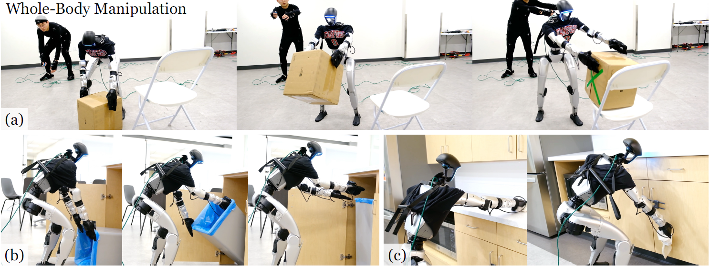

Yanjie Ze* (1)Zixuan Chen* (2)João Pedro Araújo* (1)Zi-ang Cao (1)Xue Bin Peng (2)Jiajun Wu† (1)C. Karen Liu† (3)
(1) Simon Fraser University(2) UIUC 3UC Berkeley(4) Stanford University(5) NVIDIA
*Equal contribution †Equal Advising

Abstract
Teleoperating humanoid robots in a whole-body manner marks a fundamental
step toward developing general-purpose robotic intelligence, with human
motion providing an ideal interface for controlling all degrees of freedom.
Yet, most current humanoid teleoperation systems fall short of enabling
coordinated whole-body behavior, typically limiting themselves to isolated
locomotion or manipulation tasks. We present the Teleoperated Whole-Body
Imitation System (TWIST), a system for humanoid teleoperation through
whole-body motion imitation. We first generate reference motion clips by
retargeting human motion capture data to the humanoid robot. We then
develop a robust, adaptive, and responsive whole-body controller using a
combination of reinforcement learning and behavior cloning (RL+BC).
Through systematic analysis, we demonstrate how incorporating privileged
future motion frames and real-world motion capture (MoCap) data improves
tracking accuracy. TWIST enables real-world humanoid robots to achieve
unprecedented, versatile, and coordinated whole-body motor skills—spanning
whole-body manipulation, legged manipulation, locomotion, and expressive
movement—using a single unified neural network controller.
@InProceedings{
ze2025twist,
title = {TWIST: Teleoperated Whole-Body Imitation System},
author = {Ze, Yanjie and Chen, Zixuan and Araujo, Joao Pedro and Cao, Zi-ang and Peng, Xue Bin and Wu, Jiajun and Liu, Karen},
booktitle = {Proceedings of The 9th Conference on Robot Learning},
pages = {2143--2154},
year = {2025},
editor = {Lim, Joseph and Song, Shuran and Park, Hae-Won},
volume = {305},
series = {Proceedings of Machine Learning Research},
month = {27--30 Sep},
publisher = {PMLR},
pdf = {https://raw.githubusercontent.com/mlresearch/v305/main/assets/ze25a/ze25a.pdf},
url = {https://proceedings.mlr.press/v305/ze25a.html},
abstract = {Teleoperating humanoid robots in a whole-body manner marks a fundamental step toward developing general-purpose robotic intelligence, with human motion providing an ideal interface for controlling all degrees of freedom. Yet, most current humanoid teleoperation systems fall short of enabling coordinated whole-body behavior, typically limiting themselves to isolated locomotion or manipulation tasks. We present the Teleoperated Whole-Body Imitation System (TWIST), a system for humanoid teleoperation through whole-body motion imitation. We first generate reference motion clips by retargeting human motion capture data to the humanoid robot. We then develop a robust, adaptive, and responsive whole-body controller using a combination of reinforcement learning and behavior cloning (RL+BC). Through systematic analysis, we demonstrate how incorporating privileged future motion frames and real-world motion capture (MoCap) data improves tracking accuracy. TWIST enables real-world humanoid robots to achieve unprecedented, versatile, and coordinated whole-body motor skills—spanning whole-body manipulation, legged manipulation, locomotion, and expressive movement—using a single unified neural network controller.}
}